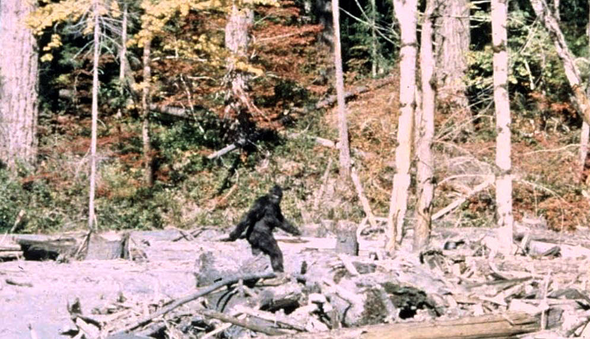
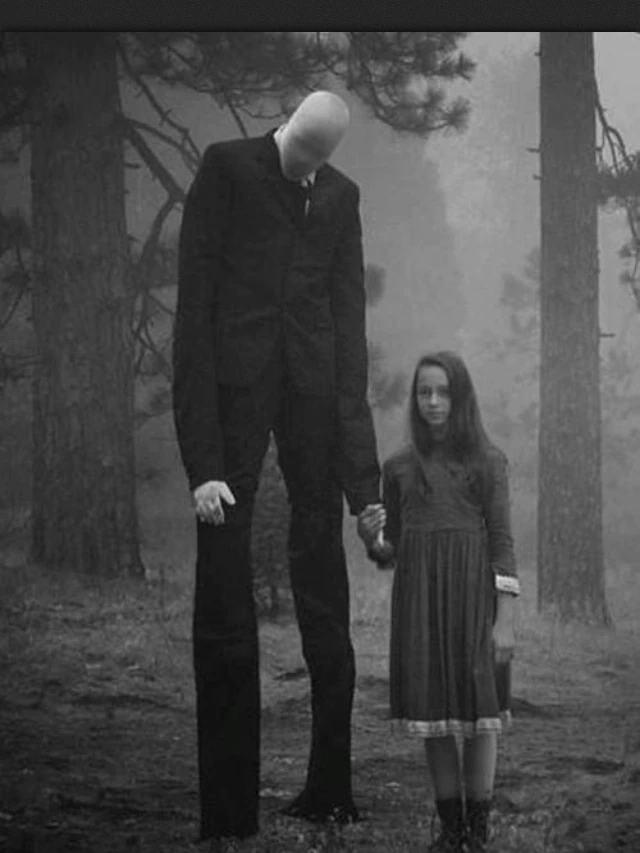
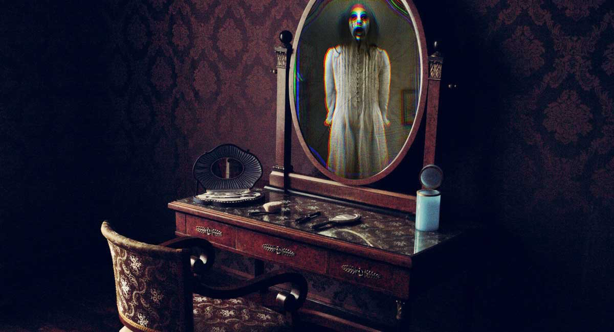

Urban legends are a modern form of folklore that often involve fictional or unverified stories about frightening or mysterious subjects. They can include ghosts, demons, strange creatures, extraterrestrials, or other supernatural events. Many urban legends are influenced by local history and popular culture and are passed down through communities over time.
The Loch Ness Monster, also known as Nessie, is a mythical creature from Scottish folklore that is said to live in Loch Ness in the Scottish Highlands. It is usually described as a large creature with a long neck and humps that can be seen above the water. Interest in Nessie became widespread in the 1930s, but the evidence for its existence remains unproven, with reported photographs and sonar readings being disputed. Scientists generally believe sightings can be explained by hoaxes, mistaken identification, or natural objects and phenomena (Wikipedia, “Loch Ness Monster”).

Bigfoot, also known as Sasquatch, is a mythical creature in North American folklore that is described as a large, hairy humanoid living in forests, especially in the Pacific Northwest. It has become a popular part of American and Canadian culture, with many people claiming to have seen it or found evidence such as footprints, photographs, videos, and hair samples. However, scientists do not consider Bigfoot to be a real animal, and much of the supposed evidence has been attributed to folklore, misidentification, or hoaxes (Wikipedia, “Bigfoot”).

Slender Man is a fictional supernatural character that originated as a creepypasta Internet meme created by Eric Knudsen, also known as Victor Surge, in 2009. He is usually described as a very tall, thin humanoid with pale skin, no facial features, and a black suit with long, branching tendrils. Stories about Slender Man often involve him stalking, abducting, or traumatizing people, especially children. Since his creation, Slender Man has become a popular figure in online horror stories and other forms of fiction (Wikipedia, “Slender Man”).

Bloody Mary is a legend about a ghost, spirit, witch, or other supernatural figure who is said to appear in a mirror when her name is repeated several times. Different versions of the legend describe her as either harmless or dangerous. The legend is commonly associated with a group game where people chant her name while looking into a mirror (Wikipedia, “Bloody Mary”).